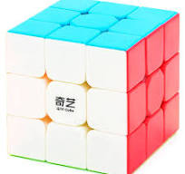

Когда скучно можно и кубик рубик собрать
Я увлекаюсь настольными играми. Это отличный способ провести время с друзьями, развивая логику и стратегическое мышление.
Последний раз прошел Ghost of Tsushima. Классная игра, которая позволяет погрузиться в мир самураев и природы Японии.